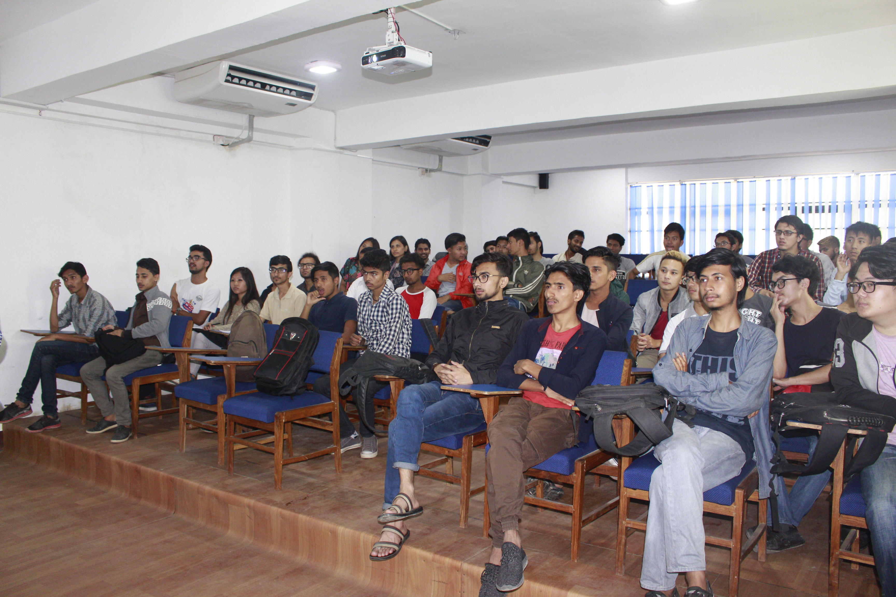

Writings
-
A talk to remember
August 24, 2017, 4 min read Undergraduate students at Herald College, Kathmandu, Nepal.How often do you meet a professor nearby your home? Not many times, at least for me. I was introduced to this wonderful gentleman who hailed from Bangalore, the same place where I started off my professional career. As it happens, we belonged to the same community (technology). We talked about recent trends such as bitcoins, start-ups and payment gateways. But, most importantly, we talked about studies and the prospect of Information Technology Industry in Nepal and for the students. He asked me to take a session in Herald college, that the message was to convey my experience of the industry I worked for last 4 years.
I was not sure with my content and how would I present it. I kept on thinking about myself, about the time when I was pursuing my studies.Did anyone take a session for us from any of our alumni? Had we got any leads when we were in our sophomore years? Instead, we had to take matters in our hands on our own. Maybe we could have accomplished more than what we thought we could. Maybe some one would have invigorated the young blood in us. These were the exact thoughts I wanted to convey via presentation. That you can achieve much more than academics, that there are reasons to find passion in Information Technology.
I was thoroughly impressed by the experienced faculty of Herald College. They were more aligned to workshops and seminars, where in, I could see some classes designed for the same purpose. I had seen couple of banners of the upcoming talks by some experienced/renowned individuals. Had I expected this sort of transformation regarding colleges in Nepal? No. Well, it sure was satisfying to see these changes. I urge other colleges to take few notes and be open to this dynamic and ever demanding course.
I did my homework, and so, I was all prepared. And just when I entered the lecture hall, a student asked me, “Which college are you from?” I guess they were expecting someone in suits or someone with white beards for that matter. And when I responded saying that I am here for the presentation, he immediately reiterated, "Oh! Good Morning Sir." Not that it boosted my confidence, it felt good though.
The presentation started off with few murmurs while I tried bringing my audience's attention to the slides. After a while, I could see concern eyes gleaming at the slides, doubts, and questions regarding their career.Some of them wanted to pursue their studies abroad, few of the lot wanted to start something on their own and some of them were just following the course. A deja vu moment, indeed.
Like I said before, my contents were geared for undergraduate students on topics like Personal Projects, Community and Working in Groups to build solutions. And after an hour and a half, I concluded my talk. I was then greeted with a warm applause from students and teachers as well. A feeling of gratitude, I must say. They also presented me a wonderful token of appreciation.
Here is a brief outline of the talk:
- Introductions : What is a Startup? What do you mean by Frontend Engineer?
- Research Papers / Publications : Where should you look for references? What is plagiarism check? Google Scholars.
- Communities : What is a Community? What are the prominent communities in Nepal? Where should you look for the newsletters / information?
- Personal Projects : Why are personal projects important to students? What is Google Summer of Code?
- Thinking towards Automation / Learning the art of Problem Solving.
- How to build your profile? What is Github?
References: